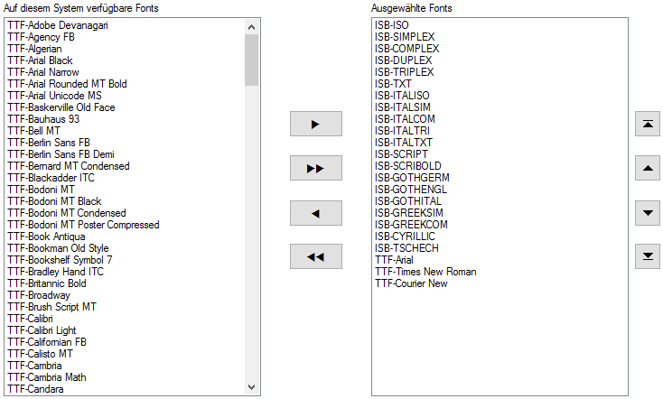
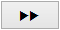
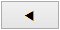
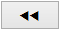

")

Auswahl der in ISBCAD verfügbaren Schriftarten (Fonts).
|
Hinweise: |
|
·Die Verwendung der Windows®-Fonts (TTF-Fonts) erfordert beim Plotten und Drucken die aktuellen Windows®-GDI Treiber. ·Sind in einem Plan Schriftarten vorhanden, die auf dem Rechner nicht installiert sind, wird ARIAL automatisch als Ersatzschriftart verwendet, auch wenn ARIAL der Liste Ausgewählte Fonts nicht hinzugefügt wurde. ·In der Schriftart-Auswahl werden fehlende Schriftarten durchgestrichen dargestellt. |

 |
Auf diesem System verfügbare Fonts
Auflistung aller auf dem Rechnersystem verfügbaren TrueType- und ISBCAD-Schriftarten.
Ausgewählte Fonts
Auflistung der in ISBCAD verfügbaren Schriftarten. Die Reihenfolge entspricht der Schriftart-Auswahl.
Schriftarten hinzufügen oder abwählen
Die markierte Schriftart wird in die Liste der ausgewählten Schriften übertragen. |
|
Die markierte Schriftart wird ganz nach oben gestellt. |
|
 |
Alle Schriftarten werden übernommen. |
|
Die markierte Schriftart wird um eins nach oben verschoben. |
 |
Aus der Liste der im Programm benutzten Schriftarten wird die markierte wieder entfernt. |
|
Die markierte Schriftart wird um eins nach unten verschoben. |
 |
Alle Schriftarten, bis auf die in den Systemdaten verwendeten, werden abgewählt. |
|
Die markierte Schriftart wird ganz nach unten gestellt. |


Zugehörige Referenz: